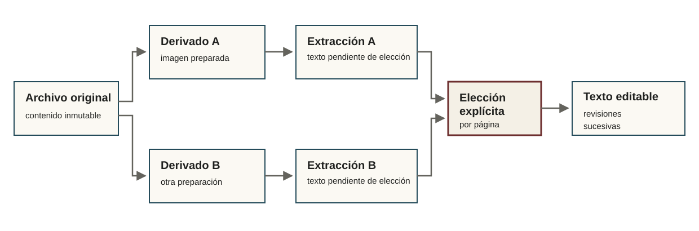

OCR y preparación documental
Procesar documentos sin reemplazar decisiones
La preparación y la extracción producen resultados versionados que pueden compararse antes de elegir qué texto revisar.

Preparar páginas
Los derivados pueden aplicar transformaciones conservadoras de imagen y conservan su relación con el original.
Extraer texto
Los perfiles de extracción pueden utilizar Surya, Docling/Tesseract u otros backends configurados. Cada corrida registra su perfil y su salida.
Elegir texto para revisar
La selección canónica de cada página es una decisión explícita. Si cambia después de que la página ya fue editada, Archive Workbench no sobrescribe silenciosamente las correcciones existentes.
Leer una zona
El OCR regional permite preparar una página, marcar una zona, ejecutar lectura localizada, revisar el resultado y decidir si debe incorporarse. La lectura localizada no se considera automáticamente mejor que el texto vigente.